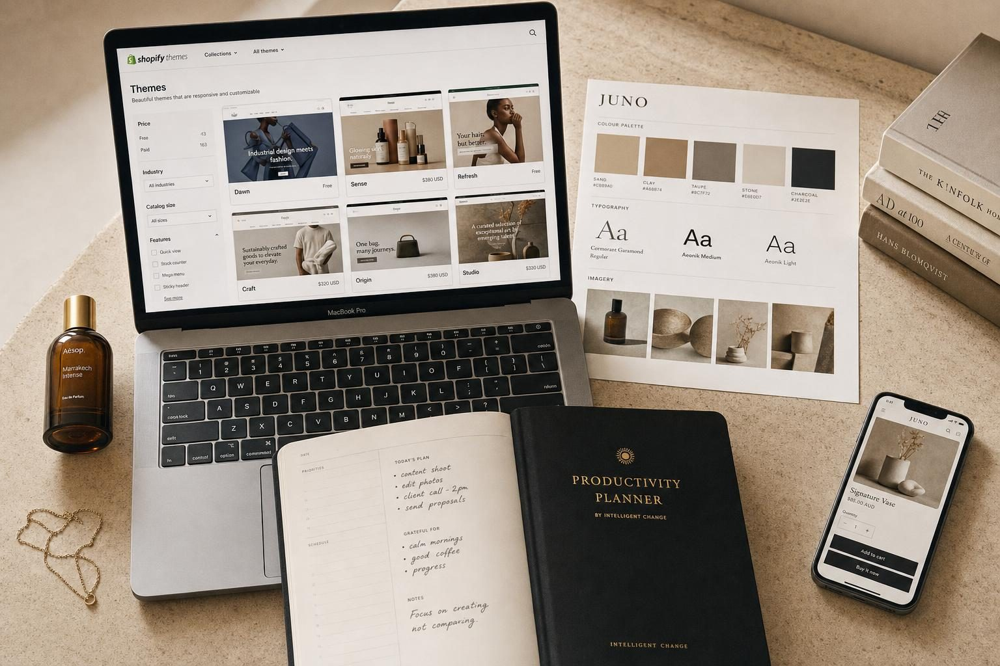
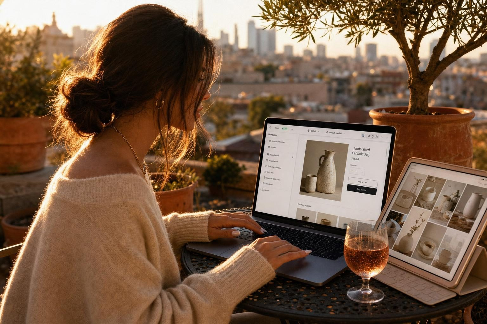
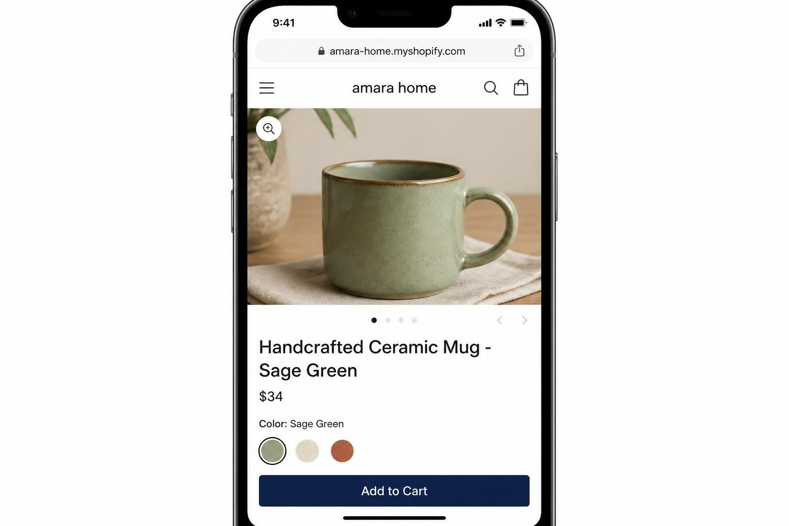
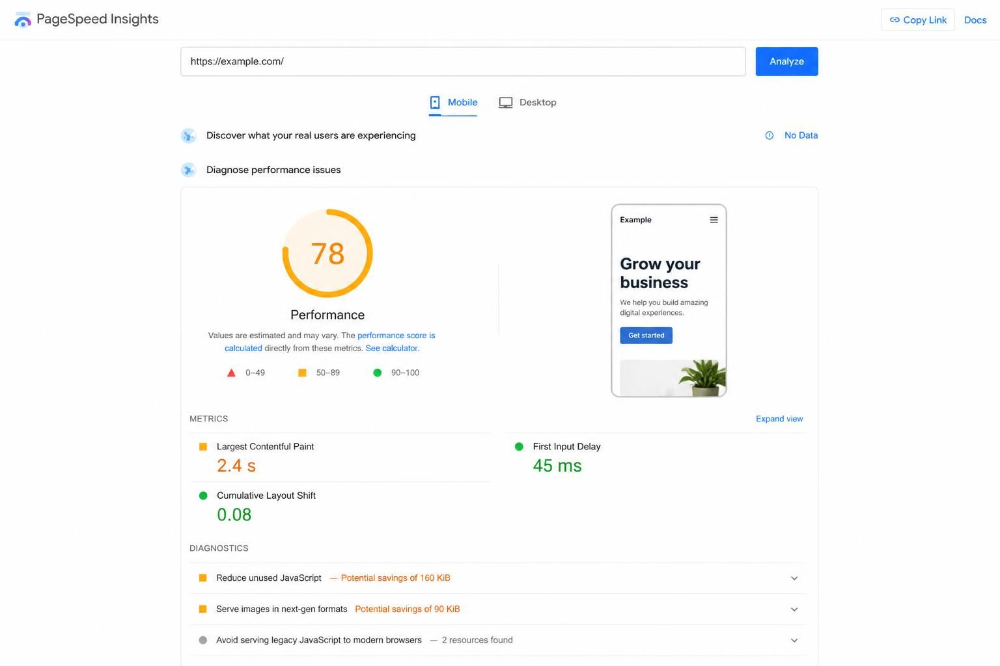
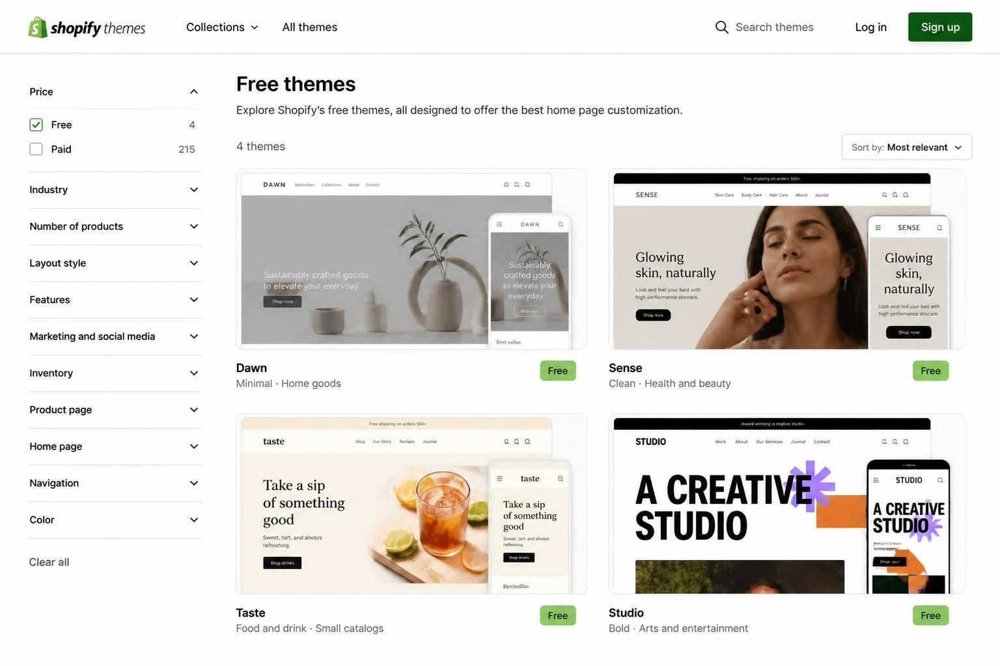
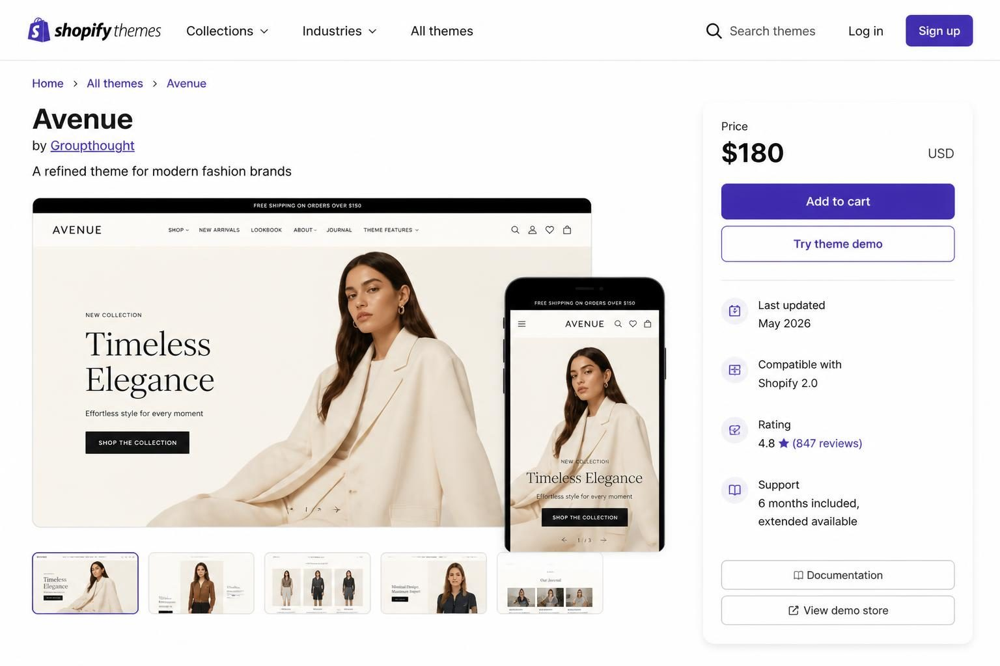

HOW TO CHOOSE A SHOPIFY STORE TEMPLATE THAT ACTUALLY SELLS YOUR PRODUCTS


The right shopify store template is one that matches your catalog size, loads fast on mobile, and includes the features your specific product type needs - without forcing you to buy ten apps to fill the gaps. That single decision affects whether visitors trust you enough to buy, whether Google ranks you high enough to find, and whether your store feels like a real business or a rushed side project.
Here is the problem most product sellers run into. You start browsing templates and within fifteen minutes you are drowning in options that all look vaguely the same. Sleek product grids. Lifestyle banners. Clean fonts. Every demo store looks stunning - because demo stores are styled by professionals with perfect photography and zero real-world constraints.
Your situation is different. You have actual products with actual variants. You have real shipping considerations. You have customers who will judge your store on their phone during a lunch break - not on a widescreen monitor in a design studio.
The template you choose becomes the architecture your entire business runs on. Get it wrong and you spend months fighting against a structure that was never built for what you sell. Get it right and your store does the heavy lifting while you focus on products and customers.
This guide breaks down exactly how to evaluate a shopify store template for your specific business - not generic advice, but the actual decision framework that separates stores that convert from stores that collect dust.
WHY MOST SHOPIFY STORE TEMPLATE ADVICE MISSES PRODUCT SELLERS
Most template guides are written for everyone. They list features, show pretty screenshots, and rank themes based on aesthetics. But a boutique selling fifteen handcrafted ceramics needs a completely different structure than a store with five hundred phone accessories.
What does your catalog actually look like?
If you sell under fifty products, you need a template that makes a small collection feel intentional - not sparse. A mega-menu theme designed for hundreds of SKUs will make your twenty earring designs look lost and incomplete.
If you sell hundreds of variants across multiple categories, you need robust filtering, quick-view functionality, and collection pages that load fast when populated with real inventory.
The category of your products matters just as much as the quantity. Image-heavy products like jewelry, home goods, and apparel need large photography sections and lifestyle context. Variant-heavy products like clothing with multiple sizes and colors need clear swatch displays and size guides that actually work on mobile.
Here is a pattern I see constantly: sellers choose a template because the demo looked beautiful, then spend six months fighting against features designed for a completely different business model. A candle maker does not need the same checkout flow as a print-on-demand t-shirt store. A curated baby boutique does not need the same navigation as a dropshipping electronics operation.
Before you open a single template preview, write down three things:
- Your current product count and realistic six-month projection
- Your variant complexity (sizes, colors, materials, bundles)
- Whether your products need storytelling space or rapid checkout flow
That simple exercise saves hours of browsing templates that were never built for your business.
THE MOBILE TEST THAT REVEALS EVERYTHING
Over seventy percent of ecommerce traffic comes from mobile devices. Yet most sellers evaluate templates on their laptop, fall in love with the desktop layout, and never test what actually matters.
Here is what happens in real life. Your customer finds your product on Instagram during a work break. They tap through to your store on their phone. They have maybe ninety seconds of attention before their meeting starts or their kid interrupts or they simply get distracted.
In those ninety seconds, your mobile experience determines whether they buy or bounce.

Test every template on your actual phone - not just the responsive preview in your browser. The responsive preview lies. It shows you a scaled-down version of the desktop experience. Your actual phone shows you what your actual customers will see.
When testing on mobile, check these specific things:
- How quickly do product images load on cellular data?
- Can you easily select variants without accidentally tapping the wrong option?
- Is the add-to-cart button visible without scrolling?
- Does the checkout feel like one smooth flow or a series of frustrating page loads?
Many templates look stunning in desktop demos but have clunky mobile product galleries, tiny variant selectors, or slow-loading image carousels that frustrate busy shoppers. This is especially critical for impulse-buy products like jewelry, apparel, and home goods - categories where your customer is often shopping during a moment of downtime, not during a dedicated shopping session.
If mobile feels sluggish with demo products, it will feel worse with your real inventory and real apps installed.
SPEED IS NOT OPTIONAL - IT DIRECTLY AFFECTS YOUR REVENUE
Shopify's 2026 research on Core Web Vitals shows a measurable relationship between site speed metrics and conversion rates. This is not abstract theory. Slow pages cost you actual orders from actual customers who clicked away before your products loaded.
Your template is not just about aesthetics - it is architecture. A bloated theme with excessive features you will never use can tank your page load times before you add a single product.
The speed conversation happens before you choose a theme, not after.
Here is how to evaluate speed before committing:
Step one: Add the theme to your store in preview mode with real products - Shopify allows this before purchase. Do not evaluate with demo content alone.
Step two: Use Google PageSpeed Insights to test the preview URL on mobile. Look at the Largest Contentful Paint (LCP) score - this measures how long it takes for your main content to become visible.
Step three: Check the theme's built-in features list. Every feature you will not use is code that still loads. A theme with twenty built-in sections you never touch is slower than a minimal theme with exactly what you need.
Step four: Read reviews specifically mentioning speed - not just design praise. Look for comments from store owners who have been using the theme for six months or more.

The stores that rank well on Google and convert consistently are not the prettiest - they are the fastest. A gorgeous template that takes four seconds to load loses to a clean template that loads in under two seconds, every single time.
If you want to go deeper on technical setup, this Shopify SEO checklist covers the speed and ranking factors most store owners miss entirely.
THE TEMPLATE VERSUS THEME CONFUSION THAT WASTES YOUR TIME
In Shopify's ecosystem, the terminology trips people up constantly. Understanding the hierarchy prevents buying decisions that do not solve the real problem.
A theme is the overall design framework for your entire store. It controls your global navigation, typography, color scheme, and the structure that every page inherits.
Templates are specific page layouts within that theme. Your product template determines how individual product pages display. Your collection template controls how category pages show products. Your cart template affects checkout flow.
When you search for "shopify store template," you are probably looking for a theme - the foundation. But once you have chosen that theme, you will customize the templates within it to match your specific product types.
Here is why this matters practically:
If you sell different product categories (earrings versus home decor, for example), you can create separate product templates within the same theme. Navigate to Online Store, then Themes, then Edit Code, then Templates. Duplicate your product.json file for variations - product.earrings.json, product.home.json. Each template can have different sections, different image layouts, different information hierarchy.
Most product sellers only need the no-code theme editor customization - drag and drop sections, adjust colors, swap images. You do not need to hire a developer for most changes.
But understanding that templates exist within themes means you can:
- Create specialized layouts for different product types
- Build unique landing pages without affecting your main structure
- Customize your collection pages differently based on category
The theme is your foundation. The templates are your rooms. Choose the foundation wisely, then arrange the rooms for how your specific customers shop.
FREE THEMES HAVE GOTTEN SIGNIFICANTLY BETTER - HERE IS WHEN THEY ARE ENOUGH
Shopify's free themes (Dawn, Sense, Taste, Studio, Ride, and others) have been significantly upgraded with features that used to require paid options. Product recommendations, discount functionality, mobile optimization - all built in now.
For many small product businesses doing under ten thousand dollars per month, a free theme customized well often outperforms a three hundred fifty dollar premium theme used out of the box.
Here is the honest breakdown:
Free themes are enough when:
- Your catalog is under one hundred products
- Your variant structure is straightforward (basic sizes and colors)
- You do not need advanced filtering or mega-menus
- Your photography is strong enough to carry simple layouts
Premium themes earn their price when:
- You need robust filtering across multiple attributes
- Your catalog exceeds two hundred products with complex categorization
- You require specific features like subscription product displays or advanced bundling
- You need built-in conversion features that would otherwise require multiple apps
Here is the math most sellers skip. A premium theme costs one hundred fifty to four hundred dollars once. An app that adds missing functionality costs ten to fifty dollars per month - forever. If a premium theme eliminates the need for three apps, it pays for itself in six months.

Before browsing premium options, preview every free theme with your three non-negotiables in mind. Test on your actual phone. If a free theme does ninety percent of what you need, stop there and invest the savings in better photography or marketing.
Jane also designs premade Shopify themes for ecommerce sellers who want a professional store without building one from scratch - worth considering if you want something more polished than default options but do not want to start from zero.
HOW TO EVALUATE A SHOPIFY STORE TEMPLATE STEP BY STEP
Here is the exact process to follow before committing to any theme. Do this in order - skipping steps leads to the regret purchases that clutter Shopify forums.
Step one: Write your store profile first.
Count your current products. Project your six-month inventory. Note your variant complexity. Decide whether your products need storytelling or rapid checkout. One paragraph describing your catalog needs - written before you open any template gallery.
Step two: Define exactly three non-negotiables.
Browse five to ten Shopify stores you admire (competitors or adjacent niches). Screenshot specific features that matter for your business. Narrow to exactly three must-haves. Write these down. Sticky add-to-cart. Quick view. Instagram integration. Whatever matters for your specific product type.
Step three: Start with free themes.
Navigate to Online Store, then Themes, then Visit Theme Store. Filter by Free. Preview Dawn, Sense, Taste, Studio, and Ride with your three non-negotiables in mind. Test each on your actual phone.
Step four: If free themes fall short, research the developer - not just the design.
For premium themes, check the studio's update log. Have they updated for Shopify's 2026 features? Read support reviews, not just design reviews. Verify compatibility with your essential apps (subscriptions, reviews, upsells, whatever you already use or definitely need).
Step five: Trial with your real products.
Add the theme in preview mode before purchasing. Upload your actual product photos, your actual descriptions, your actual variants. Test product pages, collection pages, cart, and checkout on desktop and mobile.
Step six: Time the page load.
If it feels sluggish with limited test products, it will be worse fully populated with apps installed. Use PageSpeed Insights. Trust your gut when something feels slow.
This process takes a few hours upfront but saves months of fighting the wrong foundation.
For more depth on matching themes to business type, this guide on how to choose a Shopify theme that actually converts covers the nuances most comparison articles skip.
REAL EXAMPLES: MATCHING TEMPLATES TO SPECIFIC PRODUCT TYPES
Theory is useful. Real scenarios are better. Here are four product sellers with completely different template needs.
Handmade jewelry seller (twenty to thirty products):
Sarah makes resin earrings and sells primarily through Instagram. Her template needs: large, high-quality product images. Storytelling space about her process. Simple navigation since her catalog is small. Instagram feed integration. Easy mobile checkout for impulse buyers coming from Stories.
Template mistake to avoid: Choosing a mega-menu theme designed for five hundred products - her twenty-five earring designs will look sparse and lost.
Better approach: A minimal theme like Dawn or Sense (both free) with lifestyle imagery sections and strong product photography focus.
Baby clothing boutique (one hundred fifty SKUs):
Maria runs a curated boutique selling baby clothes from indie brands. She has multiple size variants per item and parents who need quick filtering.
Template needs: Collection filtering by size, age, and brand. Quick-view for comparing items. Gift-focused features. Trust badges for new parents concerned about quality.
Template mistake to avoid: An artistic theme with slow-loading lookbook galleries that frustrates busy moms shopping during naptime.
Better approach: A utility-focused premium theme with robust filtering and fast load times.
Candle business with subscription option (fifty products):
Keisha sells hand-poured candles with a monthly subscription box alongside one-time purchases.
Template needs: Subscription product display that is not buried in tiny text. Scent story sections. Bundling capability. Local pickup option. Seasonal homepage flexibility.
Template mistake to avoid: A theme that does not integrate well with subscription apps.
Better approach: A theme explicitly mentioning subscription compatibility, plus checking app integration reviews before purchase.
Print-on-demand t-shirt store (two hundred plus designs):
Danielle runs a POD business with funny mom-themed shirts. She handles no inventory.
Template needs: Mockup-friendly product displays. Fast collection loading for browsing many designs. Variant swatches for colors. Clear size guides.
Template mistake to avoid: An image-heavy lifestyle theme that makes her POD mockups look awkward.
Better approach: A grid-focused premium theme designed for high-SKU stores with quick visual scanning.
Your niche matters more than generic best theme lists. Match the structure to your catalog and customer behavior.
THIRD-PARTY THEMES - WHAT YOU NEED TO KNOW BEFORE BUYING OUTSIDE SHOPIFY
ThemeForest, creative marketplaces, and independent sellers offer Shopify themes at various price points. Quality and support vary dramatically.
Here is the honest reality. A fifty-nine dollar theme that breaks after a Shopify update (and the developer has disappeared) costs more in the long run than a one hundred eighty dollar theme from an established studio with a track record.
Before buying from third-party marketplaces:
Check the update log. Has the theme been updated in the last six months? Shopify releases platform updates regularly - themes need to keep pace.
Read support reviews specifically. Design reviews tell you it looked nice on day one. Support reviews tell you what happens when something breaks six months later.
Verify Shopify 2.0 compatibility. Older themes built on Shopify 1.0 architecture miss critical features and require more workarounds.
Look for refund policies. Legitimate theme developers offer some form of guarantee or trial period.
Red flags to watch for:
- No updates in twelve or more months
- Multiple negative support reviews mentioning abandoned tickets
- Vague compatibility claims without specific version numbers
- No demo store you can actually browse and test

The Shopify Theme Store has quality controls and guaranteed support standards. Third-party marketplaces do not. That does not mean third-party themes are bad - some of the best themes come from independent studios. But it means you carry more due diligence responsibility.
If you are choosing between Shopify and other platforms entirely, this breakdown of Shopify vs Wix for ecommerce covers the bigger picture decision.
FREQUENTLY ASKED QUESTIONS
What is the best free Shopify template for a small product business?
Dawn is the strongest starting point for most small product sellers. It is fast, minimal, and flexible enough to customize without technical skills. If your products need more lifestyle context, Sense adds warmer storytelling sections. For food or consumable products, Taste includes features designed for that category specifically.
Are premium Shopify themes worth buying?
Premium themes earn their price when they eliminate the need for multiple paid apps or when your catalog complexity exceeds what free themes handle well. Do the math - if a premium theme replaces three apps at twenty dollars each monthly, it pays for itself in three months. If a free theme does ninety percent of what you need, the premium is probably not worth it.
When does a Shopify store need more than just a template?
When your business model requires functionality that themes do not provide - custom checkout flows, complex product configurators, or integrations with specific inventory systems. Most product sellers under two hundred SKUs never reach this point. If you find yourself adding more than five apps to compensate for template limitations, you might need custom development instead.
How do I apply different templates to different pages in Shopify?
Navigate to Online Store, then Themes, then Edit Code. In the Templates folder, duplicate your existing product.json or page.json file and rename it for your specific use case. Then assign that template to individual products or pages through the admin. This lets you have different layouts for different product categories without changing themes.
What should I look for in a Shopify theme for mobile shoppers?
Test on your actual phone, not just responsive preview. Check that product images load quickly on cellular data. Verify that variant selectors are easy to tap without errors. Confirm the add-to-cart button is visible without excessive scrolling. Test the entire checkout flow - if any step feels clunky, your mobile conversion rate will suffer.
MAKING THE DECISION AND MOVING FORWARD
Choosing a shopify store template is a business decision, not a design preference. The right template matches your catalog structure, works beautifully on mobile, and includes the features you need without forcing you to buy apps to fill gaps.
Here is what to do this week:
Write your one-paragraph store profile describing your catalog needs. Define your three non-negotiables before opening any template gallery. Preview every relevant free theme on your actual phone. Only consider premium if free falls genuinely short.
Test with real products in preview mode. Time the page load. Read support reviews, not just design reviews. Trust your gut when something feels slow or clunky.
The template that converts is the one built for how your specific customers actually shop - not the one that looked prettiest in a demo with perfect photography.
Your foundation matters. Get it right and your store does the work. Get it wrong and you spend months fighting against architecture that was never meant for your business.
If you are still deciding between platforms entirely, start with this complete guide to setting up a Shopify store - it covers what happens after you choose your template and walks through the entire first-week setup process.
Let me know in the comments below if you want me to cover any branding or marketing topics in more depth, and I'll make sure to create a blog post about it in the future.